Out[1]=

Sannsynlighetsfordeling, kumulativ fordeling, forventning, varians, median
Eksponentialfordeling Definisjon: Sannsynlighetsfordeling (Probability density function) f(x)=Exp λ(x)
Merk at Eksponential fordeling er en spesialtilfelle av Erlangfordeling, dvs. når n=1 har vi Eksponentialfordeling:
Expλ(x)=Erl1,λ(x)
Beregning i Mathematica
1. Innput
In[1]:= PDF[ExponentialDistribution[λ], x]
Out[1]=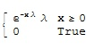
In[2]:= PDF[EksponentialDistribution[λ-verdi], x-verdi]
Eksempel:
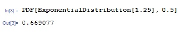
3. Definer valgfritt en eller flere lambda- og x-verdier og plot funksjonen.
In[4]:=Plot[Evaluate@ Table[PDF[ExponentialDistribution[λ eller λ-verdi], x], {λ, {λ-verdi eller verdier}} ], {x, x- eller x-verdier}, Filling -> Axis, PlotRange -> All]
Eksempel:
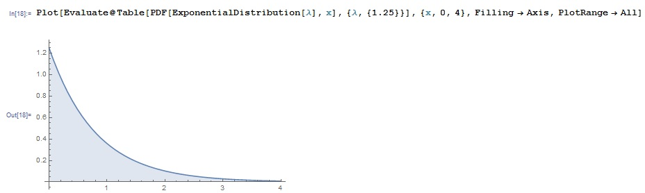
Eksempel med flere verdier:
for {λ1=0.5, λ2=1, λ3=2}, x1=0, x2=3
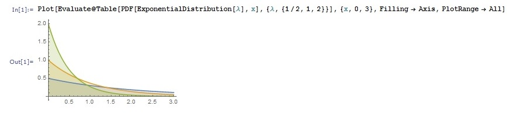
Definisjon: Kumulativ sannsynlighet (Cumulative distribution function):
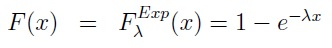
Beregning i Mathematica:
1. Skriv som innput
In[1]:= CDF[ExponentialDistribution[λ], x]
Out[1]=
In[2]:= CDF[ExponentialDistribution[λ-verdi], x-verdi]
Eksempel:
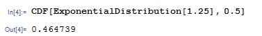
3. Plot grafen med en eller flere λ- og x-verdier.
In[4]:=Plot[Evaluate@ Table[CDF[ExponentialDistribution[λ], x], {λ, {λ-verdi eller λ-verdier}}], {x, x-verdi eller x-verdier}, Filling -> Axis]
Eksempel:
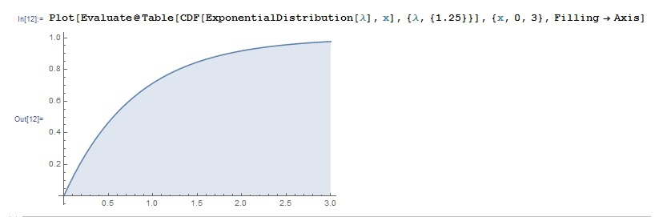
Eksempel med flere verdier:
for {λ1=0.5, λ2=1, λ3=2}, x1=0, x2=4
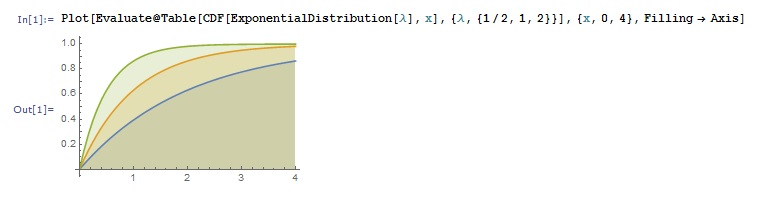
Forventing (mean) og Varians (variance):
Definisjon:
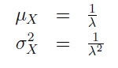
Beregning i Mathematica:
1. Innput
In[1]:= Mean[ExponentialDistribution[λ]]
In[2]:= Variance[ExponentialDistribution[λ]]
2. Spesifiser verdiene
In[3]:= Mean[ExponentialDistribution[λ-verdi]]
In[4]:= Variance[ExponentialDistribution[λ-verdi]]
Eksempel: Median:
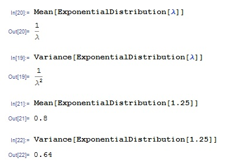
Innput:
1. Skriv
In[1]:= Median[ExponentialDistribution[λ]]
2. Spesifiser lambdaverdi
In[2]:= Median[ExponentialDistribution[λ-verdi]]
Eksempel:
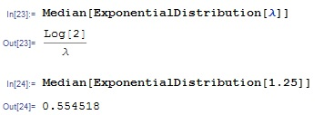